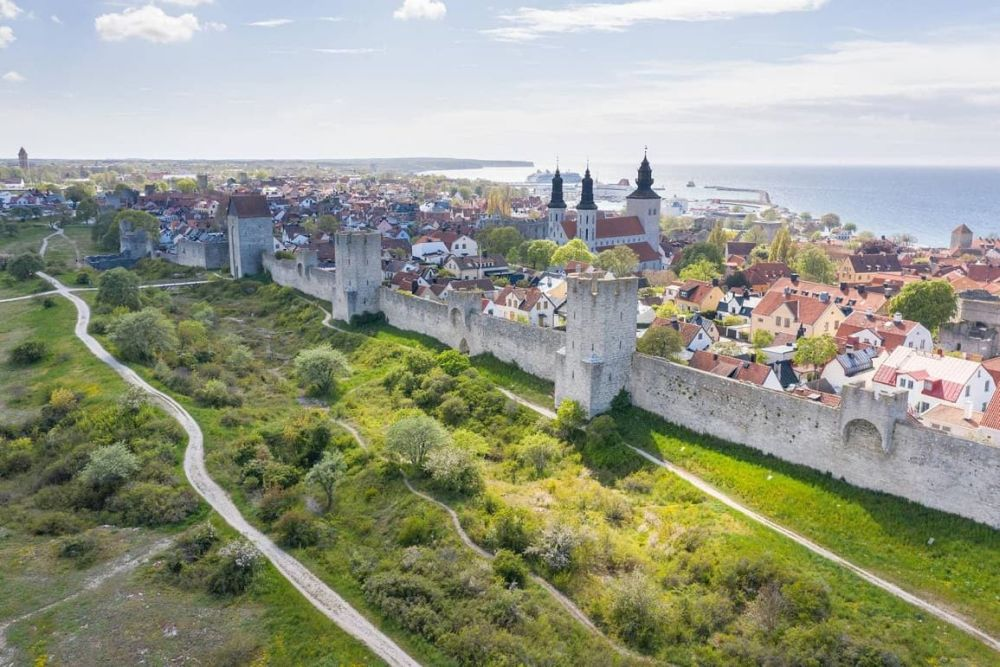

Descoperă Insula Gotland - Bijuteria istorică a Suediei
Insula Gotland, situată în Marea Baltică, este un loc cu o istorie bogată, arhitectură medievală și peisaje frumoase, oferind o varietate de experiențe fascinante pentru vizitatori:
-

Visby - Orașul medieval
Explorați străzile pavate și zidurile medievale ale orașului Visby, un sit al Patrimoniului Mondial UNESCO.
-

Peisaje naturale - Relaxare în natură
Insula oferă plaje idilice, păduri și câmpii, fiind perfectă pentru drumeții și relaxare.
-

Biserici medievale - Artă sacrală
Gotland are o serie de biserici medievale, cu fresce și arhitectură impresionante.
-

Gastronomie locală - Bucătărie tradițională
Savourați specialitățile culinare locale, inclusiv plăcintele Gotland și preparate din pește proaspăt.
-

Festivaluri de vară - Cultură și distracție
Gotland găzduiește festivaluri de muzică, teatru și artă în timpul sezonului cald.
Concluzii
Insula Gotland este o comoară a Suediei, oferind o combinație de istorie, natură și tradiții locale.